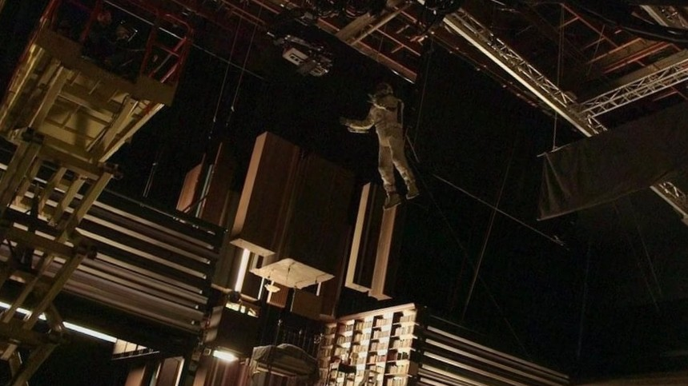
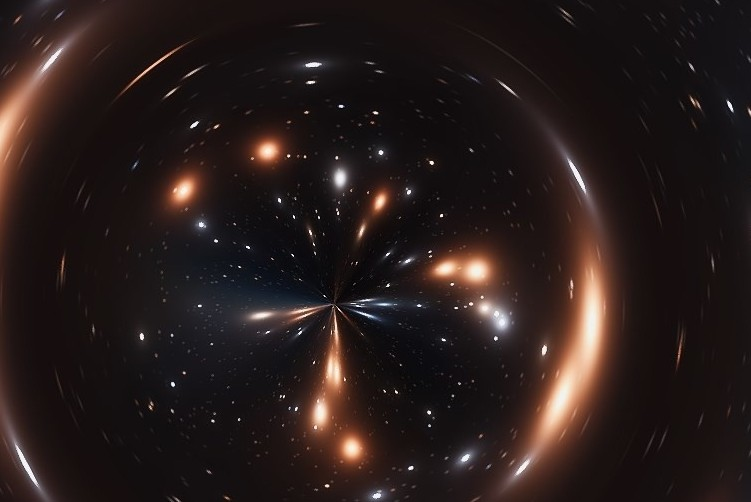

Exploring the real-world physics behind Christopher Nolan’s space epic.
Black Holes & Gargantua
The film's depiction of Gargantua is one of the most scientifically accurate in cinema. Astrophysicist Kip Thorne helped ensure the gravitational lensing effects looked realistic.
When scientists captured the first real image of a black hole in 2019 M87*—many were struck by how similar it looked to Gargantua from Interstellar, which came out in 2014. Though the movie was released years earlier, its visual model was based on real physics, thanks to Kip Thorne.
Well ofc M87* is not completely accurate- bcuz ofc the crazy bending of light can't let you have exact image of M87*.
Btw a lot of people mistake it to Sgr A* whose pic came out in 2022(hey no offense to our blackhole)
Time Dilation
Near the black hole Gargantua, the film shows how intense gravity slows time dramatically, a phenomenon known as gravitational time dilation.
This is most famously illustrated on the water planet,
where one hour equals seven years on Earth due to the planet’s proximity to the black hole. The idea comes from Einstein's theory of general relativity-By doing this, Interstellar highlights that time isn’t universal—it’s relative, and can be experienced differently depending on where you are in the universe.
The pic below isnt abt time dilation.Its abt 'Time as a physical quantity'-the only idea i didnt like(completely).How can u make time as a physical quantity?ok my bad i dont get to ask that question.ITS UNIVERSE AFTERALL

Wormholes & Space Travel
The film’s portrayal of wormholes and interstellar travel is based on real physics concepts, but exaggerated for dramatic storytelling.
In the movie, NASA discovers a wormhole near Saturn that leads to another galaxy, allowing the characters to explore potentially habitable planets without needing thousands of years to travel there.
The film portrays the wormhole as a shimmering sphere, which is scientifically accurate—unlike the "flat portal" style often shown in sci-fi, a real wormhole would appear spherical due to how it bends light.
Well I specofically liked this part- I mean isnt this kind of like a time-machine or atleast like an anywhere dore?LOL

Movie Rating – IMO
Score: pow(pi,2)/10
The film is EXCELLENT(ofc),but it leaves us with the information paradox-like who in the first place gave Cooper the coordinates, and also the 'time as aphysical quantity'